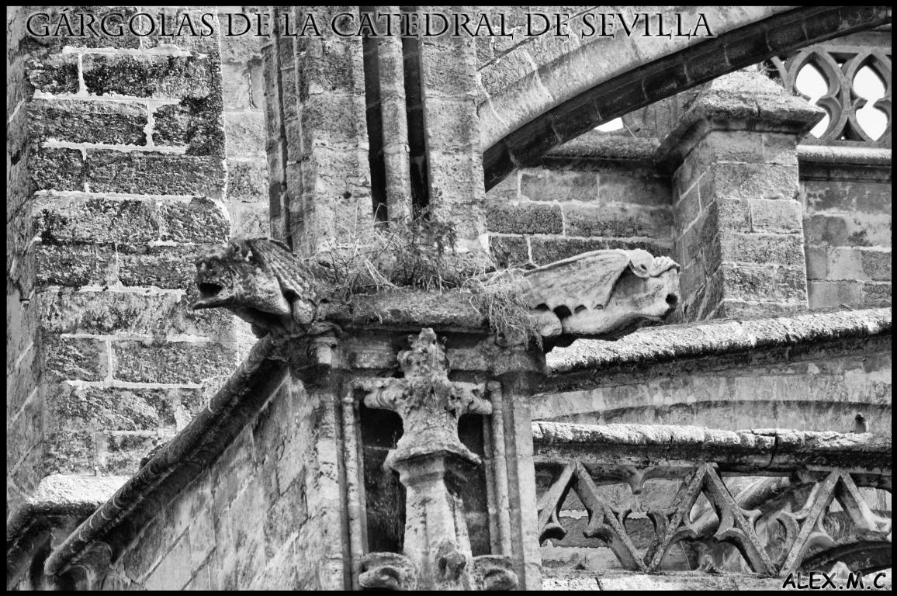

|

La palabra Gárgola procede del francés, de la palabra "gargouille", que deriva del latín gargula (garganta), en referencia al ruido que produce al pasar un líquido por un tubo, eran empleadas, como desagües para expulsar el agua de la lluvia, lejos de las paredes de los edificios.
Es en la época del gótico, concretamente durante el siglo XIII, cuando se transforman en sistema predilecto de drenaje, si bien no todas ellas tenían esta utilidad y eran llamadas grotescos o quimeras, solo con fines decorativos.
Las gárgolas de piedra se suelen localizar en los estribos, en los arbotantes o en las cornisas.
Muchas de ellas son seres imaginarios, generalmente esculpidos en piedra, con características grotescas, podemos encontrar figuras talladas con las formas de dragones, animales, hombres o mezclas de ambos, con muecas burlonas, con expresiones deformes, con posiciones poco estilosas, arrojando el agua por sus orificios.
Aunque las gárgolas de piedra tengan funciones decorativas y simbólicas, su principal función era evacuar el agua.
También se opinaba que estas gárgolas de piedra eran representaciones del demonio, que recordaban a los cristianos la necesidad de seguir los mandamientos religiosos si querían escapar del infierno.
Así pues, muchas de las gárgolas representan a dragones, diablos, demonios... todos ellos símbolos del mal para el cristianismo de la edad media.
En estas gárgolas son muchos los rasgos y características que hacen que sean demoníacas: orejas puntiagudas, cuernos, colmillos, alas, cola, patas... Por lo que todas estas gárgolas estaban asociadas al mal, tenían la función simbólica de proteger a las iglesias y a los templos y de atemorizar a los pecadores y para ahuyentar a los malos espíritus y demonios.
El diseño y las formas de las gárgolas de piedra fueron proliferando cada vez más, las del primer gótico apenas estaban elaboradas, pero poco a poco se fueron creando nuevas formas, hasta llegar a convertirse en auténticas obras de arte.
A partir ya del siglo XIII las gárgolas se hicieron más complejas, usando cada vez menos las figuras de animales, que las fueron reemplazando por figuras humanas, con un tamaño mayor, muy exageradas y caricaturizadas, haciendo también mezclas. Los temas demoníacos dejaron de usarse en el siglo XV, en el cual se exageraron las posturas y los gestos faciales, perdiendo todo significado religioso y centrándose más en lo cómico.
Cabe destacar que no se han podido encontrar dos gárgolas iguales lo que demuestra la gran creatividad e invención de sus creadores. Hay mucha variedad de formas, clases y representativos de estas gárgolas de piedra, por lo que es muy difícil descifrar su significado exacto. También llegaron a poner gárgolas en lugares, como en casas privadas y en edificios seculares (no religiosos) como en el ayuntamiento de Sevilla, por ejemplo.
|